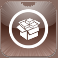
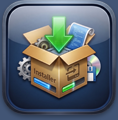

主頁
ky's cydia repo
https://kyej04u.github.io/repo/

Add to Cydia
套件列表
PushAlertSuppression
1.0.0 · iOS 4–6
隱藏 iPhone 未正確啟用造成的「連接 iTunes 以使用推播通知」提示。
NoSIMAlert
1.0.0 · iOS 3–6
隱藏每次重啟都會跳出來的「尚未安裝 SIM 卡」提示。
TimePeriodStatusBar
1.0.6 · iOS 6.0–6.1.x
在 iOS 6 狀態列顯示更細的時段，像 iPadOS 16+ 一樣。只在 12 小時制、中文語系時啟用。

APP Installer
1.0.6 · iOS 3–6
在 iPhone 上直接安裝 IPA 檔案，點一下就能裝。內建檔案瀏覽器，也可以從 iFile 用「打開方式」開啟 IPA。